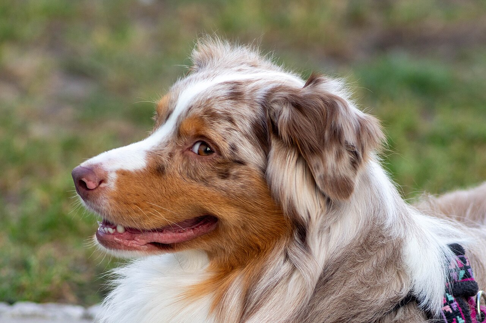

The Australian Shepherd
Smart. Loyal. Built to Work.
If you've ever watched an Aussie work a flock — or just watch your kids in the backyard as if they were a flock — you already know why this breed inspires such devotion. They're whip-smart, endlessly athletic, and happiest when they've got a job to do. This guide covers everything a prospective owner needs to know, from history to health.

Photo: Gerrit Werner Sonka / Wikimedia Commons (CC BY 4.0)
Why People Fall for Aussies
Despite the name, the Australian Shepherd was actually developed in the United States, in the ranch country of California and the Pacific Northwest. They're one of the most versatile working breeds alive today — you'll find them herding cattle and sheep, competing in agility and flyball, working as service and therapy dogs, and riding along in search-and-rescue units. That versatility comes from a brain that's always running and a body built for hours of hard work, which is exactly what makes them such rewarding — and demanding — companions.
Explore the pages above to learn about their history, temperament, coat colors, exercise needs, health considerations, and answers to the questions we hear most from new owners.